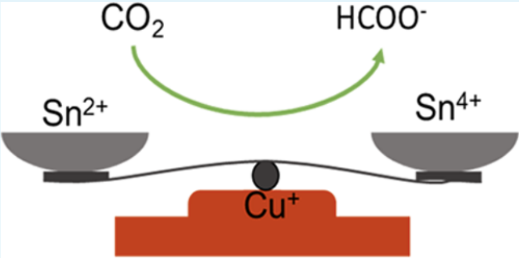
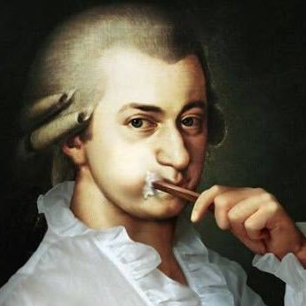

Hello.
I am a PH.D. student at the University of Massachusetts Amherst. My current research is on chemical sensing for biomarker. I ❤️ classical music and play the piano in my leisure time.
Project & Research

Undergraduate Project-Electrochemical Reduction of Carbon Dioxide
Design and optimizating the catalysts for the reduction of carbon dioxide to carbon monoxide that can be recycled to iron and steel industry
Publications:

Current Project-Chemometrics and Image Processing on Colorimetric Sensing for Biomarker
- Using Factorial screening to filter out the unimportant variables from the important variables for design a textile-based colorimetric sensor and build data-driven model using response surface method to optimize the intensity of color change
- Differentiate different chemicals via data analysis from the colorimetric sensor array image, code see my GitHub
- Image preprocessing and segmentation of the color spots on the colorimetric sensor array

Computer Vision-Image Processing and Segmentation of Rover from Background
- Using supervised learning methods such as K-mean clustering, mean-shift clustering, Normalized Cut to segment the target from the background(Python-OpenCV).
- Using unsupervised learning methods such as GrabCut method to segment the target from the background(Python-OpenCV).
- Imaging Filtering in Fourier domain(Matlab).
My Favorite Musicians

Wolfgang Amadeus Mozart
- A prolific and influential composer in Classical Period
- born January 27, 1756, Salzburg, Austria—died December 5, 1791, Vienna, Austria
- Mozart was exceptionally proficient at pretty much genre of music or instrument.

Ludwig van Beethoven
- A prolific and influential composer in Classical Period
- baptized December 17, 1770, Bonn, Germany—died March 26, 1827, Vienna, Austria
- A man ahead of his times